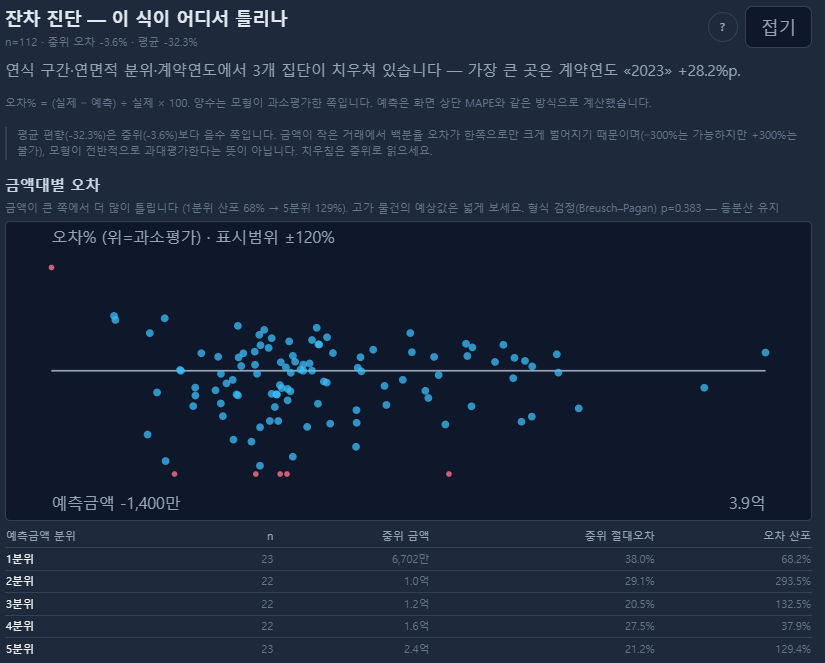

서두 · 학습목표
회귀직선이 자료에 잘 맞는지는 어떻게 확인할까요?
17장에서는 최소제곱법을 이용해 회귀직선을 구하는 방법을 배웠습니다.
그런데 회귀직선이 계산되었다고 해서 자료의 관계를 충분히 설명하고 있다고 볼 수 있을까요?
그렇지는 않습니다.
예를 들어 회귀직선 주변에 관측점들이 무작위로 흩어져 있을 수도 있지만, 곡선 모양으로 배열되거나 특정 구간에서 유난히 넓게 퍼져 있을 수도 있습니다.
두 경우 모두 회귀직선은 계산할 수 있지만, 그 결과를 해석할 때는 서로 다른 문제가 발생할 수 있습니다.
이러한 특징을 살펴보는 데 사용하는 것이 잔차분석(Residual analysis)입니다.
잔차는 실제 관측값과 회귀식의 적합값 사이의 차이입니다. 잔차를 분석하면 회귀식이 놓치고 있는 관계나 자료의 특성을 발견할 수 있습니다.
이번 장에서는 잔차의 분포와 패턴을 이용해 회귀모형의 가정을 점검하고, 그 결과를 어떻게 해석해야 하는지 알아보겠습니다.
이번 장의 학습목표
- 잔차의 부호와 크기를 이해합니다.
- MAE, RMSE, 잔차 표준오차의 차이를 구분합니다.
- 잔차 그래프로 선형성과 등분산성을 점검합니다.
- 시간적·공간적 의존성과 정규성의 의미를 이해합니다.
- 레버리지와 영향 관측값을 구분합니다.
- 잔차 진단 결과를 회귀모형의 개선에 활용합니다.
공통 학습 자료 30건 · 잔차·지표·Q–Q 좌표 JSON. 실제 거래의 출처와 대표성이 확인되지 않은 학습 자료입니다.
잔차 읽기
회귀직선을 구했다면 실제값과의 차이를 살펴보세요
잔차는 실제 관측값에서 회귀식으로 계산한 적합값을 뺀 것입니다.
잔차 = 실제값 − 적합값
eᵢ = yᵢ − ŷᵢ
- 잔차가 양수이면 실제값이 적합값보다 높습니다.
- 잔차가 음수이면 실제값이 적합값보다 낮습니다.
- 잔차가 0이면 실제값과 적합값이 같습니다.
17장에서 사용한 공통 학습 자료 30건을 다시 살펴보겠습니다.
면적을 설명변수로, 거래단가를 종속변수로 사용한 회귀식은 다음과 같습니다.
ŷ = 232.5090 − 0.6843 × 면적
이 자료의 7번 관측값은 다음과 같습니다.
| 항목 | 값 |
|---|---|
| 실제 거래단가 | 480.00만원/㎡ |
| 회귀식의 적합 단가 | 217.45만원/㎡ |
| 잔차 | +262.55만원/㎡ |
회귀식으로 계산한 단가보다 실제 관측 단가가 262.55만원/㎡ 높았습니다.
이 그림에서는 가로축에 회귀식의 적합값을, 세로축에 잔차를 표시합니다.
가운데 0선은 실제값과 적합값이 일치하는 위치입니다.
점을 살펴보면서 다음을 확인해 보세요.
- 0선을 중심으로 위아래에 고르게 흩어져 있는가?
- 특정 구간에서 잔차가 한쪽 방향으로 몰리는가?
- 적합값이 커질수록 잔차의 흩어짐도 달라지는가?
- 다른 관측값과 크게 떨어진 점이 있는가?
이러한 특징은 회귀모형이 자료의 관계를 충분히 반영하고 있는지 판단하는 단서가 됩니다.
다만 잔차가 크다는 사실만으로 해당 거래가 잘못되었다거나 고평가되었다고 판단할 수는 없습니다.
면적 외에 회귀식에 포함되지 않은 다른 특성이 영향을 주었을 수 있기 때문입니다.
또한 잔차는 표본에서 추정한 회귀식으로 계산한 값입니다. 모집단의 실제 평균 관계에서 벗어난 오차와는 구별해야 합니다.
잔차의 크기
오차를 요약하는 지표는 계산 방법에 따라 의미가 다릅니다
회귀모형의 잔차를 하나의 숫자로 요약하면 전체적으로 얼마나 차이가 나는지 파악하는 데 도움이 됩니다.
대표적인 지표에는 MAE, RMSE, 잔차 표준오차가 있습니다.
① MAE: 평균절대오차
잔차의 절댓값을 모두 더한 뒤 관측 건수로 나눈 값입니다.
MAE = Σ|eᵢ| / n
② RMSE: 평균제곱근오차
잔차를 제곱해 평균을 구한 뒤 제곱근을 취한 값입니다.
RMSE = √(SSE/n)
RMSE는 큰 잔차에 상대적으로 더 민감합니다.
③ 잔차 표준오차(RSE)
잔차제곱합을 잔차 자유도로 나눈 뒤 제곱근을 취합니다.
단순선형회귀에서 절편과 기울기 두 개를 추정했다면 잔차 자유도는 n−2입니다.
RSE = √[SSE/(n−2)]
이번 공통 학습 자료 30건의 결과는 다음과 같습니다.
| 지표 | 계산 결과 |
|---|---|
| 잔차제곱합 SSE | 111,542.70 |
| MAE | 38.16만원/㎡ |
| 학습 RMSE | 60.98만원/㎡ |
| 잔차 표준오차 RSE | 63.12만원/㎡ |
세 지표는 모두 잔차의 크기를 요약하지만 계산 방식이 다릅니다.
특히 RMSE와 RSE는 분모가 다릅니다.
RMSE는 전체 관측 건수 n을 사용하지만, RSE는 회귀계수 추정에 사용한 자유도를 고려합니다.
또한 여기서 계산한 MAE와 RMSE는 회귀식을 만드는 데 사용한 학습 자료 자체의 오차입니다.
새로운 거래자료에서도 같은 수준의 예측오차가 나타난다는 뜻은 아닙니다.
실제 예측 성능을 평가하려면 별도의 검증 자료나 적절한 교차검증이 필요합니다.
잔차 표준오차는 무엇을 추정하나요?
고전적인 선형회귀모형에서 조건부 평균이 올바르게 설정되고 오차가 등분산이며 적절한 비상관 조건 등이 성립하면, 잔차제곱합을 잔차 자유도로 나눈 값은 오차분산의 불편추정량이 됩니다.
즉, RSE의 제곱인 SSE/(n−2)가 오차분산을 추정합니다.
다만 제곱근을 취한 RSE 자체가 반드시 불편추정량이라는 뜻은 아닙니다.
또한 RSE가 작다고 해서 회귀모형의 모든 가정이 충족되었다는 의미도 아닙니다.
n=30, 추정 모수 p=2, 잔차 자유도 28입니다. SSE의 단위는 (만원/㎡)²이고 MAE·RMSE·RSE의 단위는 만원/㎡입니다.
선형성 점검
잔차가 곡선을 이루면 직선이 놓친 관계가 있을 수 있습니다
단순선형회귀는 설명변수와 종속변수의 평균적인 관계를 직선으로 표현합니다.
하지만 실제 관계가 반드시 직선인 것은 아닙니다.
예를 들어 면적이 증가할수록 거래단가가 처음에는 빠르게 낮아지다가 일정 면적 이후에는 천천히 낮아질 수 있습니다.
이런 자료에 직선 하나만 적용하면 특정 구간에서는 잔차가 계속 양수로, 다른 구간에서는 계속 음수로 나타날 수 있습니다.
잔차를 적합값이나 설명변수에 대해 그렸을 때 U자형이나 물결 모양의 패턴이 반복적으로 나타난다면 평균 관계의 함수 형태가 적절하지 않을 가능성을 검토해야 합니다.
세 패턴을 같은 축으로 비교합니다.
공통 학습 자료 30건에서 나온 잔차가 아닙니다. 화면 전환은 가상 점과 축 배율을 바꾸지 않습니다.
이 그림에서는 세 가지 형태를 비교합니다.
① 특별한 패턴이 없는 경우
잔차가 0선 주변에 비교적 불규칙하게 흩어져 있습니다.
이는 평균 관계의 뚜렷한 누락 패턴이 보이지 않는다는 점에서 긍정적인 신호입니다.
② 곡선 형태의 패턴
잔차의 중심이 X나 적합값에 따라 체계적으로 달라집니다.
직선이 실제 평균 관계의 형태를 충분히 나타내지 못했을 가능성이 있습니다.
③ 부채꼴 형태의 패턴
적합값이 커질수록 잔차가 점점 넓게 퍼집니다.
오차분산이 일정하지 않은 이분산을 의심할 수 있습니다.
하지만 잔차 그림만으로 문제의 원인을 확정할 수는 없습니다.
곡선 패턴이 나타났다면 제곱항이나 로그변환, 누락된 집단 특성 등의 가능성을 살펴볼 수 있습니다.
중요한 것은 학습 오차를 줄이기 위해 무조건 복잡한 곡선을 만드는 것이 아니라, 자료의 특성과 실제 관계에 적합한 모형을 찾는 것입니다.
등분산성 점검
잔차의 중심과 흩어짐은 따로 살펴봐야 합니다
회귀모형에서 등분산성(Homoscedasticity)은 설명변수의 값에 따라 모집단 오차의 분산이 일정하다는 조건입니다.
수식으로 나타내면 다음과 같습니다.
Var(ε|X) = σ²
쉽게 말하면 설명변수의 값이 달라져도 평균 관계 주변의 오차가 비슷한 정도로 흩어진다는 뜻입니다.
반대로 설명변수의 값에 따라 오차의 흩어짐이 달라지는 현상을 이분산성(Heteroscedasticity)이라고 합니다.
예를 들어 소규모 토지는 거래단가가 비교적 일정하지만 대규모 토지는 거래 조건이 다양해 단가 차이가 크게 나타날 수 있습니다.
이 경우 면적이 커질수록 잔차의 폭이 넓어지는 형태가 나타날 수 있습니다.
여기서 중요한 것은 잔차의 중심과 잔차의 폭을 구분하는 것입니다.
- 잔차의 중심이 체계적으로 달라지면 평균 관계의 설정을 검토합니다.
- 잔차의 폭이 체계적으로 달라지면 오차분산의 변화를 검토합니다.
두 문제가 동시에 나타날 수도 있습니다.
이분산성이 존재한다고 해서 최소제곱법으로 계산한 회귀계수가 반드시 편향되는 것은 아닙니다.
설명변수와 오차 사이의 조건부 평균 관계 등 필요한 조건이 적절하다면 OLS 계수는 불편성을 유지할 수 있습니다.
하지만 일반적인 등분산 가정에 기초한 표준오차는 부적절할 수 있습니다.
그 결과 계수의 p값이나 신뢰구간도 잘못 계산될 수 있습니다.
이러한 경우에는 이분산 강건 표준오차, 가중최소제곱법, 적절한 변수 변환 등을 검토할 수 있습니다.
다만 강건 표준오차는 이분산에 대응하는 추론 방법이지, 누락변수나 잘못된 평균 관계를 자동으로 해결하는 방법은 아닙니다.
독립성과 자료의 순서
잔차가 서로 연관되어 있는지도 확인해야 합니다
회귀분석에서는 관측값 사이의 관계도 중요합니다.
예를 들어 특정 지역의 부동산 거래가 비슷한 시기에 집중되어 있다면, 여러 거래가 같은 시장 상황의 영향을 받을 수 있습니다.
또한 같은 아파트 단지에서 발생한 거래들은 공통적인 입지나 단지 특성을 공유합니다.
이런 경우 관측값의 오차가 서로 관련되어 있을 가능성이 있습니다.
시간적 의존성은 가까운 시점의 오차들이 서로 관련되는 현상입니다.
공간적·집단적 의존성은 가까운 지역이나 동일 집단의 오차들이 공통 요인의 영향을 받는 현상입니다.
실제 거래일 순서로 잔차를 그렸을 때 양수나 음수가 연속되거나 일정한 주기가 나타난다면 시간적 의존성 또는 누락된 시간 효과를 검토할 수 있습니다.
다만 학습 자료 30건에 부여된 번호는 실제 거래 순서를 의미하지 않습니다.
따라서 단순한 관측번호 순서의 잔차 그래프를 시계열 진단으로 해석해서는 안 됩니다.
자료의 의존성을 확인하려면 실제 거래일과 지역·단지 식별자 등 관련 정보가 필요합니다.
오차에 의존성이 존재하면 일반적인 독립표본 가정에 따른 표준오차가 부적절할 수 있습니다.
자료의 특성에 따라 군집 강건 표준오차나 시계열·공간 모형 등을 검토할 수 있습니다.
한편 독립성과 무상관은 같은 조건이 아닙니다. 독립성은 더 강한 조건입니다.
또한 OLS에서 계산한 잔차는 절편이 포함된 경우 합이 0이라는 제약 등을 공유하므로, 모집단 오차와 똑같이 독립적인 관측값으로 취급할 수 없습니다.
정규성 점검
정규분포는 회귀직선 계산보다 통계적 추론과 관련됩니다
회귀분석에서는 정규분포라는 말을 자주 사용합니다.
그렇다면 거래단가나 면적이 반드시 정규분포를 따라야 할까요?
그렇지는 않습니다.
최소제곱법으로 회귀계수를 계산하는 데 종속변수나 설명변수의 정규분포가 반드시 필요한 것은 아닙니다.
고전적인 작은 표본의 t검정과 F검정, 신뢰구간을 정확하게 적용할 때는 설명변수가 주어졌을 때의 오차분포에 관한 정규성 가정이 사용됩니다.
이를 시각적으로 살펴보는 방법 중 하나가 Q–Q 그림(Quantile–Quantile plot)입니다.
Q–Q 그림에서는 관측한 잔차의 분위수와 정규분포에서 기대되는 분위수를 비교합니다.
점들이 대체로 하나의 직선을 따라 배열된다면 잔차분포가 정규분포와 크게 다르지 않을 가능성을 보여줍니다.
반면 양쪽 끝에서 점들이 크게 벗어난다면 두꺼운 꼬리나 극단적인 관측값 등 다른 분포 특성을 의심할 수 있습니다.
이번 공통 학습 자료에서는 위쪽 꼬리에서 뚜렷한 이탈이 나타납니다.
다만 이런 형태만으로 정규성 위반의 원인을 단정할 수는 없습니다.
평균 함수의 설정 오류, 극단적인 거래, 서로 다른 집단의 혼합 등도 함께 검토해야 합니다.
또한 표본수가 30건이라면 그래프 자체에도 표본 변동에 따른 불확실성이 있습니다.
정규성 검정의 p값 하나로 모형의 적합 여부를 결정하기보다는 잔차의 패턴과 자료 구성, 분석 목적을 함께 살펴보는 것이 좋습니다.
정규성이 없으면 회귀분석을 사용할 수 없나요?
그렇지 않습니다.
최소제곱 회귀계수는 오차가 정규분포를 따르지 않아도 계산할 수 있습니다.
다만 작은 표본에서 고전적인 t·F 검정의 정확한 분포를 적용하기 어려울 수 있습니다.
표본수가 충분히 크다면 적절한 조건 아래 근사적인 통계적 추론이 가능할 수 있지만, 오차의 의존성이나 이분산 등 다른 문제까지 자동으로 해결되는 것은 아닙니다.
레버리지와 영향력
큰 잔차를 가진 점과 회귀계수를 크게 바꾸는 점은 다릅니다
회귀분석에서 이상치를 살펴볼 때는 두 가지를 구분해야 합니다.
하나는 회귀직선에서 멀리 떨어진 관측값입니다.
다른 하나는 회귀직선의 위치나 기울기를 크게 바꾸는 관측값입니다.
첫 번째는 잔차의 크기와 관련되고, 두 번째는 영향력(Influence)과 관련됩니다.
특히 설명변수 X의 값이 다른 관측값에서 멀리 떨어져 있다면 해당 관측값은 높은 레버리지(Leverage)를 가질 수 있습니다.
하지만 레버리지가 높다고 해서 반드시 회귀계수를 크게 바꾸는 것은 아닙니다.
회귀직선에서 크게 벗어나지 않는다면 영향력이 작을 수도 있습니다.
이 그림에서는 가로축에 레버리지, 세로축에 내부 표준화 잔차를 표시합니다.
이를 통해 설명변수의 극단성과 회귀직선으로부터의 벗어남을 구분할 수 있습니다.
공통 학습 자료의 7번 관측값은 다음과 같은 결과를 보입니다.
| 진단 지표 | 7번 관측값 |
|---|---|
| 레버리지 h | 약 0.096 |
| 내부 표준화 잔차 | 약 4.37 |
| Cook 거리 D | 약 1.011 |
7번 관측값은 잔차가 매우 크고 회귀계수에도 상당한 영향을 미치는 사례입니다.
17장에서 해당 관측값을 제외했을 때 회귀기울기가 −0.6843에서 −0.5103으로 달라지는 것을 확인했습니다.
하지만 Cook 거리가 크다는 이유만으로 해당 거래를 자동 삭제해서는 안 됩니다.
먼저 원자료의 정확성과 특이한 거래 조건을 확인하고, 관측값을 포함한 결과와 제외한 결과를 비교해야 합니다.
레버리지와 Cook 거리 계산
절편을 포함한 단순선형회귀에서 레버리지는 다음과 같이 계산합니다.
hᵢ = 1/n + (xᵢ−x̄)²/Sxx
레버리지는 해당 관측값이 X의 평균에서 얼마나 떨어져 있는지 반영합니다.
단순선형회귀에서 모든 관측값의 레버리지를 더하면 추정한 모수의 수인 2가 됩니다.
내부 표준화 잔차는 다음과 같습니다.
rᵢ = eᵢ/[s√(1−hᵢ)]
여기서 s는 전체 관측값을 이용해 계산한 잔차 표준오차입니다.
이 값은 관측값의 레버리지에 따른 잔차분산의 차이를 고려합니다.
Cook 거리는 다음과 같이 표현할 수 있습니다.
Dᵢ = (rᵢ²/2) × hᵢ/(1−hᵢ)
이번 식에서 분모의 2는 절편과 기울기 두 개의 모수를 사용했기 때문입니다.
Cook 거리는 해당 관측값을 제외했을 때 전체 적합값이 얼마나 변하는지를 요약하는 영향력 지표입니다.
일정한 경험적 기준을 사용해 추가 점검 대상을 정할 수 있지만, 그 기준을 자동 삭제 규칙으로 사용해서는 안 됩니다.
진단 순서
잔차분석은 문제를 찾고 모형을 개선하는 과정입니다
실제 회귀모형을 점검할 때는 모든 검정을 무작정 수행하기보다 분석 목적과 자료 구조를 먼저 확인하는 것이 좋습니다.
다음과 같은 순서로 접근할 수 있습니다.
1. 자료의 구성과 분석 목적 확인
어떤 거래를 분석했는지, 종속변수와 설명변수는 무엇인지, 지역과 기간은 어떻게 설정했는지 확인합니다.
2. 잔차와 적합값의 관계 확인
잔차의 중심과 흩어짐을 살펴보고 곡선이나 부채꼴 형태가 나타나는지 확인합니다.
3. 시간·집단·분포 점검
실제 거래 시점과 지역·단지별 관계를 살펴보고 Q–Q 그림으로 잔차의 분포 특성을 확인합니다.
4. 영향 관측값 확인
레버리지와 표준화 잔차, Cook 거리 등을 이용해 특정 관측값이 회귀계수에 미치는 영향을 살펴봅니다.
5. 모형 수정과 재검증
분석 목적과 자료의 특성에 따라 함수 형태나 변수 구성, 통계적 추론 방법을 검토합니다.
수정했다면 동일한 진단을 다시 수행하고, 예측 목적에서는 별도의 검증자료로 성능을 확인합니다.
중요한 것은 잔차 그림이 깨끗해 보인다는 사실만으로 모형의 모든 가정이 충족되었다고 결론 내릴 수 없다는 점입니다.
잔차만으로는 관측되지 않은 교란변수나 인과관계의 타당성을 충분히 확인하기 어렵습니다.
잔차분석은 모형을 합격 또는 불합격으로 단순 판정하기보다, 어떤 조건에서 모형을 해석할 수 있는지 이해하고 개선하는 과정입니다.
확인 문제
잔차 그래프가 무엇을 알려주는지 구분해 보세요
- 절편을 포함한 OLS에서 잔차의 합이 0이라면 회귀모형의 가정이 모두 충족된 것일까요?
답과 해설
아닙니다.
잔차의 합이 0이라는 사실은 절편을 포함한 OLS의 수학적 성질입니다.
곡선 형태의 관계나 이분산, 관측값의 의존성이 존재하더라도 잔차의 합은 0일 수 있습니다.
- 거래단가가 정규분포를 따르지 않으면 회귀계수를 계산할 수 없을까요?
답과 해설
계산할 수 있습니다.
OLS 계수 계산 자체에 종속변수의 정규분포는 필요하지 않습니다.
작은 표본에서 고전적인 t·F 검정 등을 정확하게 적용할 때는 오차의 조건부 정규성 등 적절한 가정이 중요합니다.
- 레버리지가 높은 관측값은 반드시 제외해야 할까요?
답과 해설
아닙니다.
레버리지가 높다는 사실은 설명변수의 값이 다른 관측값에서 멀리 떨어져 있음을 나타냅니다.
자료의 오류 여부와 잔차, 영향력, 포함·제외 결과를 함께 확인해야 합니다.
- 이분산 강건 표준오차를 적용하면 누락변수 문제도 해결될까요?
답과 해설
아닙니다.
강건 표준오차는 특정 조건에서 통계적 불확실성의 추정을 개선하는 방법입니다.
잘못된 평균 관계나 누락변수에 따른 편향까지 자동으로 해결하지는 못합니다.
CH2 Macro에서 읽기
복합 다항회귀의 잔차 진단 화면을 읽어 보세요
아래는 사용자가 제공한 CH2 Macro 복합 다항회귀의 「잔차 진단」 화면입니다. 교재의 면적·단가 단순회귀 30건과 다른 실제 서비스 사례입니다. 캡처에는 n=112, 중위 오차 −3.6%, 평균 오차 −32.3%가 표시되어 있습니다. 지역·분석 기간·모형 전체 설정은 이미지에 포함되어 있지 않아 현재 조회값이나 원자료 재계산 결과로 제시하지 않습니다.

교재 그림 1의 세로축은 단가의 잔차(만원/㎡)입니다. 이 서비스 화면의 가로축은 예측 거래금액이고 세로축은 원척도 금액의 백분율 오차입니다. 계산 척도가 다르므로 두 그림의 숫자나 퍼짐을 직접 비교하면 안 됩니다.
화면의 오차율(%) = (실제금액 − 예측금액) / 실제금액 × 100
양수는 해당 모형의 예측금액이 실제 거래금액보다 낮았다는 뜻입니다. 화면의 ‘과소평가’는 이 예측 차이를 가리키며, 감정평가상 저평가·고평가를 판정하는 말이 아닙니다. 평균 −32.3%와 중위수 −3.6%의 차이도 구별해서 읽어야 합니다. 작은 실제금액이 분모에 놓이면 큰 음의 오차율이 평균에 강하게 반영될 수 있습니다. 적합 척도의 OLS 잔차 합이 0이어도 원척도 백분율 오차의 평균은 0일 필요가 없습니다. 중위수 역시 모형의 타당성을 보장하지 않습니다.
붉은 점은 자동 삭제 대상으로 판정된 점이 아닙니다. 이 캡처의 표시범위 ±120%를 벗어나 위·아래 경계에 붙여 표시한 점입니다. 따라서 경계의 점이 모두 정확히 +120% 또는 −120%라는 뜻도 아닙니다.
오차율의 상한도 예측값에 따라 달라집니다. 실제금액이 양수이고 예측금액이 0 이상일 때만 오차율이 +100% 이하입니다. 캡처에는 예측금액 최솟값 −1,400만이 표시되어 있습니다. 음수 예측이 가능한 다항·선형 모형에서는 +100%를 넘는 오차율도 가능하므로, 이미지의 ‘+300%는 불가’ 설명을 모든 모형에 적용할 수는 없습니다.
표의 ‘오차 산포’는 각 예측금액 분위에서 오차율의 표본표준편차입니다. 1분위 68.2%, 5분위 129.4%이지만 2분위는 293.5%입니다. 금액이 커질수록 산포가 계속 커진다는 단조 관계로 단정할 수 없습니다. ‘중위 절대오차’도 MAE·학습 RMSE·RSE와 다른 지표입니다.
화면에는 Breusch–Pagan p=0.383과 ‘등분산 유지’라는 문구가 있습니다. 이는 5% 기준에서 등분산 귀무가설을 기각하지 못했다는 뜻으로 읽어야 합니다. 등분산이 입증되었거나 잔차 그림의 문제가 모두 사라졌다는 뜻은 아닙니다. 금액대별 오차율 산포와 모형 척도의 이분산 검정은 같은 통계가 아닙니다.
실제 복합 잔차 진단의 계산과 제공 범위
이 화면은 적합에 사용한 거래의 표본 내 예측값을 사용합니다. 금액을 로그로 적합한 모형에서는 exp(적합값)에 Duan 보정을 곱해 원척도 금액으로 되돌립니다. 화면 상단 MAPE와 잔차 진단이 같은 원척도 예측값을 사용합니다. 새 거래의 검증 오차나 교차검증 결과와는 구별합니다.
실제 구현은 유한한 실제·예측금액과 0이 아닌 실제금액에서 오차율을 계산하며, 분모는 |실제금액|입니다. 양수인 거래금액에서는 본문의 식과 같습니다. 금액 분위는 예측금액으로 나누고, 각 분위의 중위 예측금액·중위 절대오차율·오차율 표본표준편차를 제공합니다. 집단 요약에는 최소 건수 조건이 있습니다.
지역·용도지역·건축물용도·연식·연면적 분위·계약연도 등의 집단별 요약이 자료와 최소 건수 조건에 따라 제공됩니다. 집단의 ‘전체 대비’는 해당 집단의 중위 오차율에서 나머지 표본의 중위 오차율을 뺀 값입니다. 그림이 보여주는 차이만으로 그 원인을 확정하지 않습니다.
Cook 거리와 레버리지, 영향 상위 거래 및 제외 재적합에 따른 계수 변화도 조건에 따라 제공합니다. 이는 사용자가 원자료와 민감도를 점검하기 위한 진단이며 자동 삭제 규칙이 아닙니다. 확인한 카드에는 정규 Q–Q 그림이나 교재와 같은 MAE·RMSE·RSE가 표시되지 않습니다. 다른 모형 비교 화면의 RMSE와도 평가 표본·척도를 맞춘 뒤 비교해야 합니다.
BP 검정은 화면 오차율이 아니라 적합된 모형의 원래 잔차와 설계행렬을 사용합니다. 로그 종속모형이면 로그 척도 잔차입니다. 확인한 OLS 경로는 일반 표준오차를 사용하며, 이 진단이 이분산 강건 또는 군집 표준오차를 자동 적용하는 것은 아닙니다. 거래 시점·지역·동일 건물의 의존성도 별도로 검토해야 합니다.
회귀에 앞서 선택한 지역·기간·유형·이상치 정책과 변수별 결측 처리가 적용됩니다. 화면의 n은 이 진단에 사용 가능한 오차율의 수입니다. 캡처의 전체 설정과 원자료가 없으므로 n=112나 p=0.383을 이 교재에서 독립적으로 재계산하지는 않았습니다.
잔차 진단은 시장의 평균적 관계를 점검하는 도구입니다. 개별 물건의 적정가격이나 조건 변경의 인과효과를 확정하지 않습니다.
결론 · 학습 요약
회귀모형은 계수뿐 아니라 잔차와 가정을 함께 살펴봐야 합니다
회귀분석은 관측 자료에서 변수 사이의 관계를 요약하는 유용한 방법입니다.
하지만 회귀직선이 계산되었다고 해서 그 관계가 올바르게 설정되었다는 뜻은 아닙니다.
잔차분석을 통해 평균 관계의 형태, 오차의 흩어짐, 자료의 의존성, 극단적인 관측값의 영향을 살펴볼 수 있습니다.
이번 장에서 기억할 내용
- 잔차: 실제 관측값과 회귀식 적합값의 차이입니다.
- 오차의 크기: MAE, RMSE, RSE는 계산 방식과 해석 목적이 다릅니다.
- 선형성: 잔차가 곡선 형태를 이루면 평균 관계의 함수 형태를 검토해야 합니다.
- 등분산성: 잔차의 폭이 달라지면 오차분산의 변화를 의심할 수 있습니다.
- 독립성: 시간적·공간적·집단적 의존성은 통계적 추론에 영향을 줄 수 있습니다.
- 정규성: 회귀계수 계산 자체보다 작은 표본의 고전적인 통계적 추론과 관련됩니다.
- 영향력: 큰 잔차와 높은 레버리지를 구분하고, Cook 거리 등을 이용해 특정 관측값의 영향을 점검합니다.
- 모형 개선: 잔차분석은 문제를 발견하고 수정 결과를 검증하는 과정입니다.
다음 19장 「다중회귀와 변수의 해석」에서는 여러 설명변수를 하나의 회귀모형에 포함했을 때 계수의 의미가 어떻게 달라지는지 알아보겠습니다.
참고자료와 계산값
- NIST: Model validation and residual analysis — 모형 점검과 잔차 분석.
- 잔차·레버리지·Cook 거리와 Q–Q 좌표 — 반올림 전 계산값.
참고자료의 기존 확인일: 2026-10-08. 계산은 17장과 같은 면적(㎡)·단가(만원/㎡) 자료를 사용했습니다. 그림 2의 세 패턴은 가상 개념도입니다.